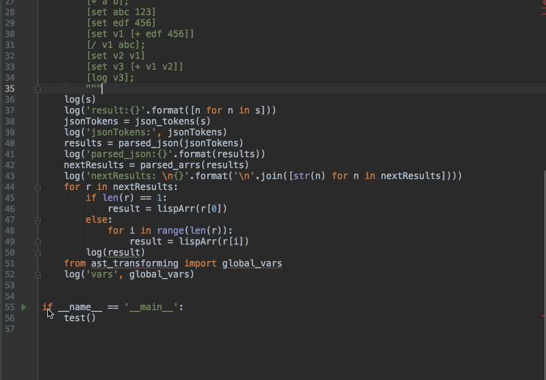
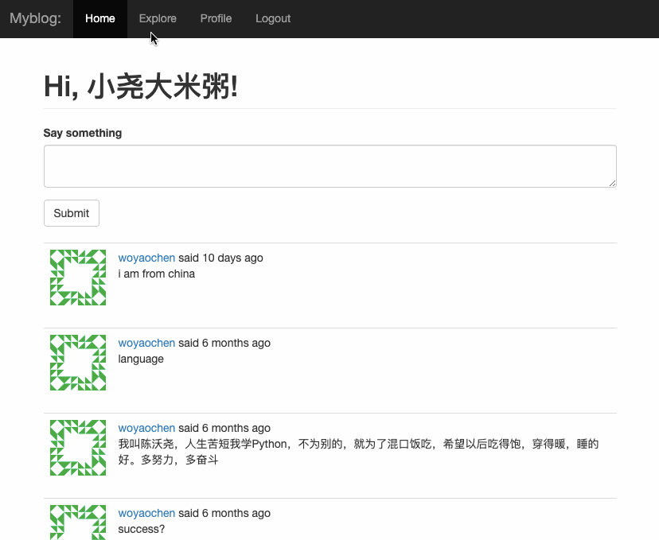
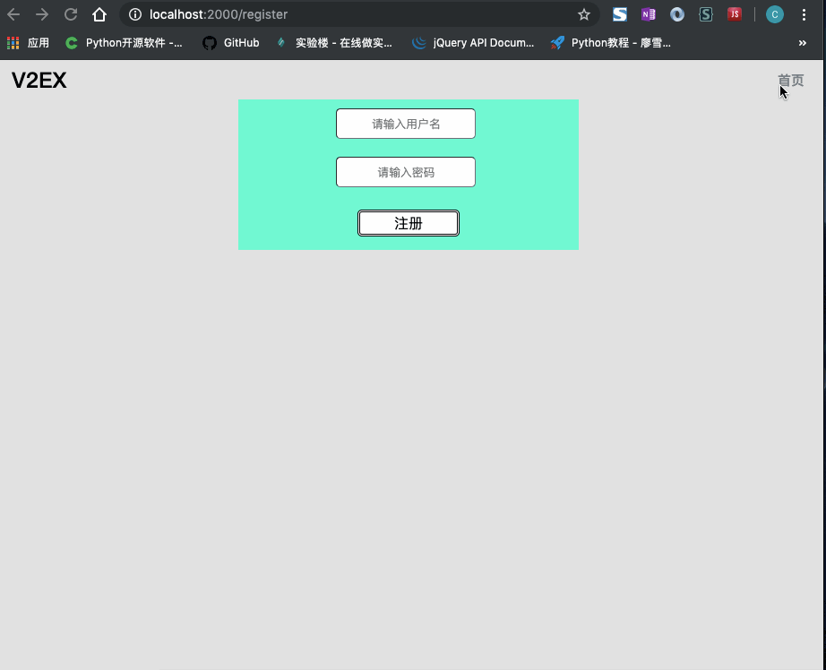
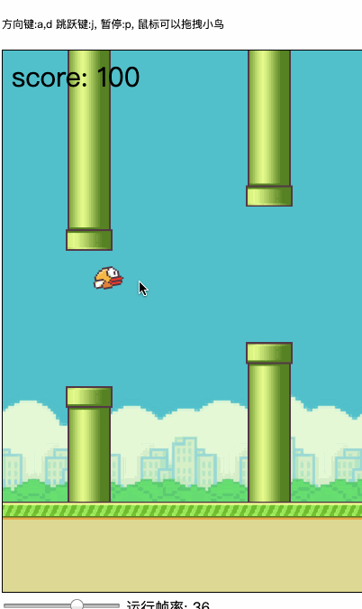
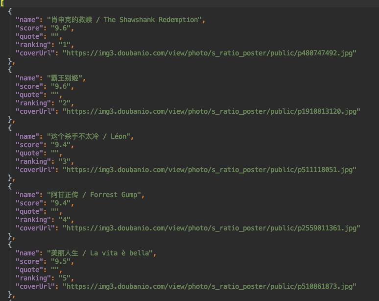
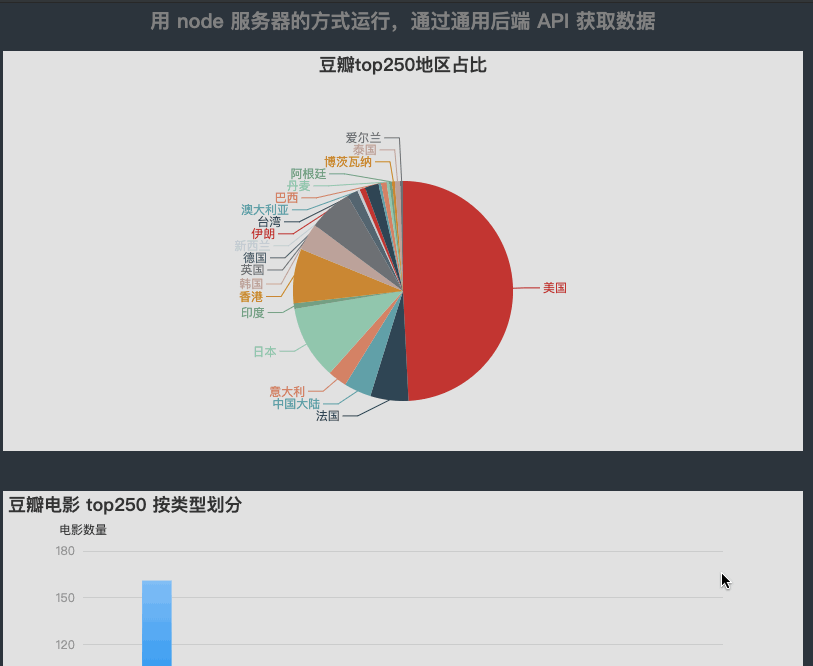
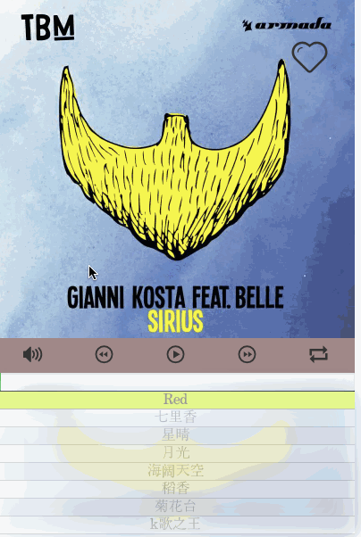
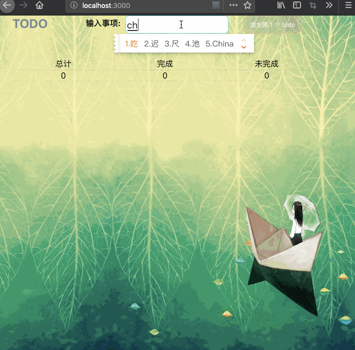

原理： 前端：（词法，语法分析） =》 ast抽象语法树 后端： (中间代码，优化，汇编，目标代码)
利用python flask 结合 sqlite 编写的博客程序 参考了microblog的flask_web开发这本书 该项目利用了flak-login用户认证，tokens保护机制 对用户注册，密码重置利用了flask_mail的邮箱确认 页面的布局利用了bootstrap 模板使用了jinjia对html编写 利用了Blueprint对路由函数进行包装
 利用原生js，结合html5的画布编写的flappy_bird游戏 一个游戏，游戏中解决了小鸟的重力下头部会朝下，游戏如何实时更新。 比如调节下面的金手指，改变小鸟，管道的速录宽度，而游戏中自动跟新数值
利用了画布的getimagedata对像素处理 构造了从点到线到面的实现。 实现了画图，油漆桶，橡皮擦，清空，撤回，按钮功能

vuecli搭建页面，vue构建header,seller, shopcart,ratings组件，vueResourece,vueRouter的使用 webpack配置，es6代码风格编写，css stylus的使用 特色：实现了点击购物图标时，物品从当前位置移动到购物车动画

一个是利用python的extree解析页面，requests获取页面 （该爬虫能够伪造成浏览器，更为强大的爬虫） 另一个是利用node.js的cheerio解析页面，requestsync获取页面 将获取的数据，使用lodash结合echarts进行处理后，渲染到页面。
 原生js实现了带有音量调节，进度条，随机播放，收藏功能的播放器
express框架搭建服务器，node.js对数据进行处理 然后前端用react写的TODO，实现了todo计数组件，TODO状态组件。
